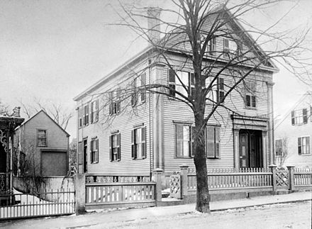

Lizzie Andrew Borden ( – ) was an American woman who was tried and acquitted of the axe murders of her father and stepmother in Fall River, Massachusetts. No one else was charged in the murders, and, despite ostracism from other residents, Borden spent the remainder of her life in Fall River. She died of pneumonia at the age of 66, just days before the death of her older sister, Emma.
The Borden murders and trial received widespread publicity in the United States, and have remained a topic in American popular culture depicted in numerous films, theatrical productions, literary works, and folk rhymes around the Fall River area.
Early Life
Lizzie Andrew Borden[a] was born on July 19, 1860, in Fall River, Massachusetts, to Sarah Anthony Borden (née Morse; 1823–1863) and Andrew Jackson Borden (1822–1892). Her father, who was of English and Welsh descent, grew up in very modest surroundings and struggled financially as a young man, despite being the descendant of wealthy and influential local residents. Andrew eventually prospered in the manufacture and sale of furniture and caskets, then became a successful property developer. He was a director of several textile mills and owned considerable commercial property. He was also president of the Union Savings Bank and a director of the Durfee Safe Deposit and Trust Co. At the time of his murder, his estate was valued at $300,000 ($10,000,000 in 2024).
Despite his wealth, Andrew was known for his frugality. For instance, the Borden residence lacked indoor plumbing even though it was a common feature for the wealthy at that time. The house stood in an affluent area, but the wealthiest residents of Fall River, including Andrew's cousins, generally lived in the more fashionable neighborhood, The Hill, which was farther from the industrial areas of the city.
Lizzie and her older sister, Emma Lenora Borden (1851–1927), had a relatively religious upbringing and attended Central Congregational Church. As a young woman, Lizzie was very involved in church activities, including teaching Sunday school to children of recent immigrants to the United States. She was involved in religious organizations, such as the Christian Endeavor Society, for which she served as secretary-treasurer, and contemporary social movements, such as the Woman's Christian Temperance Union. She was also a member of the Ladies' Fruit and Flower Mission.
Three years after the death of Lizzie's mother, Andrew married Abby Durfee Gray (1828–1892). Lizzie later stated that she called her stepmother "Mrs. Borden" and demurred on whether they had a cordial relationship; she believed that Abby had married her father for his wealth. Bridget Sullivan (whom they called Maggie), the Bordens' 25-year-old live-in maid, who had immigrated to the U.S. from Ireland, testified that Lizzie and Emma rarely ate meals with their parents. In May 1892, Andrew killed multiple pigeons in his barn with a hatchet, believing they were attracting local children to hunt them. Lizzie had recently built a roost for the pigeons, and it has been commonly recounted that she was upset over his killing of them, though the veracity of this has been disputed.[b] A family argument in July 1892 prompted both sisters to take extended vacations in New Bedford. After returning to Fall River, a week before the murders, Lizzie chose to stay in a local rooming house for four days before returning to the Borden residence.
Tension had been growing within the Borden family in the months before the murders, especially over Andrew's gifts of real estate to various branches of Abby's family. After their stepmother's sister received a house, the sisters demanded and received a rental property, the home they had lived in until their mother died, which they purchased from their father for $1. A few weeks before the murders, they sold the property back to their father for $5,000 ($170,993 in 2023). The night before the murders, John Vinnicum Morse, Lizzie and Emma's maternal uncle, visited and was invited to stay for a few days to discuss business matters with Andrew, leading to speculation that their conversation, particularly about property transfer, may have aggravated an already tense situation.
For several days before the murders, the entire household had been violently ill. A family friend later speculated that mutton left on the stove to use in meals over several days was the cause. Abby had feared poison, given that Andrew had not been a popular man in Fall River.

The Borden house at 92 Second Street
in Fall River, Massachusetts
Murders of Andrew and Abby
Thursday, August 4, 1892
Morse arrived in the evening of August 3 and slept in the guest room that night. After breakfast the next morning, at which Andrew, Abby, Morse, and Sullivan were present, Andrew and Morse went to the sitting room, where they chatted for nearly an hour. Morse left around 8:48 am to buy a pair of oxen and visit his niece in Fall River, planning to return to the Borden home for lunch at noon. Andrew left for his morning walk sometime after 9 am.
Although the cleaning of the guest room was one of Lizzie and Emma's regular chores, Abby went upstairs sometime between 9:00 am and 10:30 am to make the bed. According to the forensic investigation, Abby was facing her killer at the time of the attack. She was first struck on the side of the head with a hatchet, which cut her just above the ear, causing her to turn and fall face down on the floor, creating contusions on her nose and forehead. Her killer then struck her multiple times, delivering seventeen more direct hits to the back of her head, killing her.
When Andrew returned at around 10:30 am, his key failed to open the door, so he knocked. Sullivan went to unlock the door; finding it jammed, she uttered a curse. She would later testify that she heard Lizzie laughing immediately after this; she did not see Lizzie, but stated that the laughter was coming from the top of the stairs. This was considered significant as Abby was already dead by this time, and her body would have been visible to anyone on the home's second floor. Lizzie later denied being upstairs and testified that her father had asked her where Abby was, to which she replied that a messenger had delivered Abby a summons to visit a sick friend.
Sullivan stated that she had then removed Andrew's boots and helped him into his slippers before he lay down on the sofa for a nap, a detail contradicted by the crime-scene photos, which show Andrew wearing boots. She testified that she was in her third-floor room, resting from cleaning windows, when just before 11:10 am she heard Lizzie call from downstairs, "Maggie, come quick! Father's dead. Somebody came in and killed him."
Andrew was slumped on a couch in the downstairs sitting room, struck ten or eleven times with a hatchet-like weapon. One of his eyes had been split cleanly in two, suggesting that he had been asleep when attacked. His still-bleeding wounds suggested a very recent attack. Dr. Bowen, the family's physician, arrived from his home across the street and pronounced both victims dead. Detectives estimated that Andrew's death had occurred at approximately 11:00 am.
Investigation
Lizzie's initial answers to the police officers' questions were at times strange and contradictory. Initially she reported hearing a groan, or a scraping noise or a distress call, before entering the house. Two hours later she told police she had heard nothing and entered the house not realizing that anything was wrong. When asked where her stepmother was, she recounted Abby receiving a note asking her to visit a sick friend. She also stated that she thought Abby had returned and asked if someone could go upstairs and look for her. Sullivan and a neighbor, Mrs. Churchill, were half-way up the stairs, their eyes level with the floor, when they looked into the guest room and saw Abby lying face down on the floor.
Most of the officers who interviewed Lizzie reported that they disliked her "attitude"; some said she was too calm and poised. Despite her behavior and changing alibis, she was not checked for bloodstains. Police did search her room, but it was a cursory inspection; at the trial they admitted to not doing a proper search because Lizzie was not feeling well. They were subsequently criticized for their lack of diligence.
In the basement, police found two hatchets, two axes, and a hatchet-head with a broken handle. The hatchet-head was suspected of being the murder weapon as the break in the handle appeared fresh and the ash and dust on the head, unlike that on the other bladed tools, appeared to have been deliberately applied to make it look as if it had been in the basement for some time. However, none of these tools were removed from the house. Because of the mysterious illness that had stricken the household before the murders, the family's milk and the victims' stomachs (removed during autopsies performed in the Borden dining room) were tested for poison; none was found. Residents suspected Lizzie of purchasing "hydrocyanic acid in a diluted form" from the local druggist. Her defense was that she inquired about using the acid to clean her furs, despite the local medical examiner's testimony that it did not have antiseptic properties.
Lizzie and Emma's friend, Alice Russell, decided to stay with the sisters the night following the murders while Morse spent the night in the attic guest room, contrary to later accounts that he slept in the murder-site guest room.[citation needed] Police were stationed around the house on the night of August 4, during which an officer said he had seen Lizzie enter the cellar with Russell, carrying a kerosene lamp and a slop pail. He stated he saw both women exit the cellar, after which Lizzie returned alone; though he was unable to see what she was doing, he stated it appeared she was bent over the sink.
On August 5, Morse left the Borden residence and was mobbed by hundreds of people; police had to escort him back to the house. The following day, police conducted a more thorough search of the house, inspecting the sisters' clothing and confiscating the broken-handled hatchet head. That evening a police officer and the mayor visited the house, and Lizzie was informed that she was a suspect in the murders. The next morning, Russell entered the kitchen to find Borden tearing up a dress. She explained that she was planning to put it on the fire because it was covered in paint. It was never determined whether it was the dress she had been wearing on the day of the murders.
Inquest
Lizzie appeared at the inquest hearing on August 8. Her request to have her family attorney present was refused under a state statute providing that an inquest must be held in private. She had been prescribed regular doses of morphine to calm her nerves, and it is possible that her testimony was affected by this. Her behavior was erratic, and she often refused to answer a question even if the answer would be beneficial to her. She often contradicted herself and provided alternating accounts of the morning in question, such as saying she was in the kitchen reading a magazine when her father arrived home, then saying she was in the dining room doing some ironing, and then saying she was coming down the stairs.
The district attorney was very aggressive and confrontational. On August 11, Lizzie was served with awarrant of arrest and jailed. The inquest testimony, the basis for the modern debate regarding Lizzie's guilt or innocence, was later ruled inadmissible at her trial in June 1893. Contemporaneous newspaper articles noted that Lizzie possessed a "stolid demeanor" and "bit her lips, flushed, and bent toward attorney Adams;" it was also reported that the testimony provided in the inquest had "caused a change of opinion among her friends who have heretofore strongly maintained her innocence." The inquest received significant press attention nationwide, including an extensive three-page write-up in The Boston Globe. A grand jury began hearing evidence on November 7, and Borden was indicted on December 2.
Five days before the trial's commencement, on June 1, another axe-murder occurred in Fall River. This time the victim was Bertha Manchester, who was found hacked to death in her kitchen. The similarities between the Manchester and Borden murders were striking and noted by jurors. Jose Correa de Mello, a Portuguese immigrant, was later convicted of Manchester's murder in 1894, and was determined not to have been in the vicinity of Fall River at the time of the Borden murders.
A prominent point of discussion in the trial, and press coverage of it, was the hatchet-head found in the basement, which was not convincingly demonstrated by the prosecution to be the murder weapon. Prosecutors argued that the killer had removed the handle because it would have been covered in blood. One officer testified that a hatchet handle was found near the hatchet-head, but another officer contradicted this. Though no bloody clothing was found at the scene, Russell testified that on August 8, 1892, she had witnessed Lizzie burn a dress in the kitchen stove, saying it had been ruined when she brushed against wet paint. During the course of the trial, the defense never attempted to challenge this statement.
Lizzie's presence at the home was also a point of dispute during the trial; according to testimony, Sullivan entered the second floor at around 10:58 am and left Lizzie and her father downstairs. Lizzie told several people that at this time, she went into the barn and was not in the house for "twenty minutes or possibly a half an hour". Hyman Lubinsky testified for the defense that he saw Lizzie leaving the barn at 11:03 am and Charles Gardner confirmed the time. At 11:10 am, Lizzie called Sullivan downstairs, told her Andrew had been murdered and ordered her not to enter the room; instead, Lizzie sent her to get a doctor.
Both victims' heads had been removed during autopsy, and the skulls were admitted as evidence during the trial and presented on June 5, 1893. Upon seeing them in the courtroom, Lizzie fainted. Evidence was excluded that she had sought to purchase prussic acid (hydrogen cyanide), purportedly for cleaning a sealskin cloak, from the local druggist on the day before the murders. The judge ruled that the incident was too remote in time to have any connection.
The presiding Associate Justice, Justin Dewey, who had been appointed by Robinson when he was governor, delivered a lengthy summary that supported the defense as his charge to the jury before it was sent to deliberate on June 20, 1893. After an hour and a half of deliberation, the jury acquitted Lizzie Borden of the murders. Upon exiting the courthouse, she told reporters she was "the happiest woman in the world".
Although acquitted at trial, Lizzie remained the prime suspect in her father's and stepmother's murders. Writer Victoria Lincoln proposed in 1967 that she might have committed the murders while in a fugue state. Another prominent suggestion was that she was physically and sexually abused by her father, which drove her to kill him. There is little evidence to support this, but incest is not a topic that would have been discussed at the time, and the methods for collecting physical evidence would have been quite different in 1892. This belief was intimated in local papers at the time of the murders, and was revisited by scholar Marcia Carlisle in a 1992 essay.
Mystery author Evan Hunter, better known as Ed McBain, in his 1984 novel Lizzie, suggested that Lizzie committed the murders after being caught in a tryst with Sullivan. McBain elaborated on his speculation in a 1999 interview, speculating that Abby had caught the two together and had reacted with horror and disgust, and that Lizzie had killed Abby with a candlestick. She made a confession to Andrew when he returned home but killed him in a rage with a hatchet when he reacted exactly as Abby had. He further speculated that Sullivan disposed of the hatchet somewhere afterwards.
In her later years, Lizzie was rumored to be a lesbian, but there was no such speculation about Sullivan, who later married a man she met while working as a maid in Butte, Montana. Sullivan died in Butte in 1948. Allegedly, she gave a death-bed confession to her sister in which she stated that she had changed her testimony on the stand to protect Lizzie.
John Morse
Another significant suspect is John Morse, Lizzie's maternal uncle, who rarely met with the family after his sister died but had slept in the house the night before the murders; according to law enforcement, he had provided an "absurdly perfect and over-detailed alibi for the death of Abby Borden". Morse was considered a suspect by police for a period.
"William Borden"
A man named William Borden, suspected to be Andrew's illegitimate son, was noted as a possible suspect by author Arnold Brown, who surmised that William had tried and failed to extort money from his alleged father. Author Leonard Rebello, after extensive research on William, proved he was not Andrew's son.
Emma Borden
Although Emma had an alibi at Fairhaven, about 15 miles (24 km) from Fall River, crime writer Frank Spiering proposed in his 1984 book Lizzie that she might have secretly visited the residence to kill her parents before returning to Fairhaven in time to receive the telegram informing her of the murders.
Later life
After the trial, the Borden sisters moved into a large, modern house in The Hill neighborhood in Fall River. Around this time, Lizzie began using the name Lizbeth A. Borden. At their new house, which Lizbeth dubbed "Maplecroft", they had a staff that included live-in maids, a housekeeper and a coachman. Because Abby was ruled to have died before Andrew, her estate went first to Andrew and then, at his death, passed to his daughters as part of his estate. A considerable settlement, however, was paid to settle claims by Abby's family.
Despite the acquittal, Lizzie was ostracized by Fall River society. Her name was again brought into the public eye when she was accused of shoplifting in Providence, Rhode Island, in 1897. In 1905, shortly after an argument over a party that Lizbeth had given for actress Nance O'Neil, Emma moved out of the house and never saw her sister again.
Death
Lizzie was ill in her last year following the removal of her gallbladder; she died of pneumonia on June 1, 1927, in Fall River at age 66. Funeral details were not published and few attended. Nine days later, Emma died from chronic nephritis in a nursing home in Newmarket, New Hampshire, having moved to this location in 1923 both for health reasons and to avoid renewed attention following the publication of another book about the murders. The Borden sisters, neither of whom had ever married, were buried side by side in the family plot in Oak Grove Cemetery.
At the time of her death, Borden was worth over $250,000 (equivalent to $5,884,000 in 2023). She owned a house on the corner of French Street and Belmont Street, several office buildings, shares in several utilities, two cars and a large amount of jewelry. She left $30,000 (equivalent to $706,000 in 2023) to the Fall River Animal Rescue League and $500 ($12,000 in 2023) in trust for perpetual care of her father's grave. Her closest friend and a cousin each received $6,000 ($141,000 today)—substantial sums at the time of the estate's distribution in 1927—and numerous friends and family members each received between $1,000 ($24,000 in 2023) and $5,000 ($118,000 in 2023).
In culture
Scholar Ann Schofield notes that "Borden's story has tended to take one or the other of two fictional forms: the tragic romance and the feminist quest ... As the story of Lizzie Borden has been created and re-created through rhyme and fiction it has taken on the qualities of a popular American myth or legend that effectively links the present to the past."
The Borden house became a museum, and operates a bed and breakfast with 1890s styling. Pieces of evidence used in the trial, including the hatchet-head, are preserved at the Fall River Historical Society.
Folk rhyme
The case was memorialized in a popular skipping-rope rhyme, sung to the tune of the then-popular song "Ta-ra-ra Boom-de-ay."
Lizzie Borden took an axe
and gave her mother forty whacks.
When she saw what she had done,
she gave her father forty-one.
Folklore says that the rhyme was made up by an anonymous writer as a tune to sell newspapers. Others attribute it to the ubiquitous, but anonymous, "Mother Goose".
In reality, Lizzie's stepmother suffered eighteen or 19 blows; her father suffered eleven blows.
The rhyme has a less well-known second verse:
Andrew Borden now is dead,
Lizzie hit him on the head.
Up in heaven he will sing,
on the gallows she will swing.
Depictions
Lizzie Borden has been depicted in music, radio, film, theater, and television, often in association with the murders of which she was acquitted.
Among the earlier portrayals on stage was John Colton and Carleton Miles's 1933 play Nine Pine Street, in which Lillian Gish played Effie Holden, a character who is based on Borden. The play was not a success and ran for only twenty-eight performances. In 1947 Lillian de la Torre wrote a one-act play, Goodbye, Miss Lizzie Borden.
Other retellings include New Faces of 1952, a 1952 Broadway musical with a number titled Lizzie Borden, which depicts the crimes, as well as Agnes de Mille's ballet Fall River Legend (1948) and the Jack Beeson opera Lizzie Borden (1965), both works being based on Borden and the murders of her father and stepmother. Other plays based on Borden include Blood Relations (1980), a Canadian production written by Sharon Pollock that recounts events leading up to the murders, which was made into a television movie in Calgary. Lizzie Borden, another musical adaptation, was also made starring Tony nominee Alison Fraser.
A March 24, 1957, episode of Omnibus presented two different adaptations of the Lizzie Borden story: the first a play, "The Trial of Lizzie Borden", withKatharine Bard as Lizzie; the second a production of the Fall River Legend ballet with Nora Kaye as "The Accused". In 1959, The Legend of Lizzie by Reginald Lawrence attracted praise for Anne Meacham in the title role, but still closed after just two performances.
A January 21, 1956, episode of Alfred Hitchcock Presents, entitled “The Older Sister”, presents a fictionalized account, occurring one year after the murders, where Lizzie and Emma have a conversation revealing who the murderer was.
The folk singing group The Chad Mitchell Trio recorded a black comedy song, Lizzie Borden by Michael Brown, for their live 1961 album Mighty Day on Campus. Released as a single, it reached 44 on the Billboard Hot 100 chart in 1962.
ABC commissioned The Legend of Lizzie Borden (1975), a television film starring Elizabeth Montgomery as Lizzie Borden, Katherine Helmond as Emma Borden, and Fionnula Flanagan as Bridget Sullivan; it was later discovered after Montgomery died that she and Borden were in fact sixth cousins once removed, both descending from 17th century Massachusetts resident John Luther. Rhonda McClure, the genealogist who documented the Montgomery-Borden connection, said: "I wonder how Elizabeth would have felt if she knew she was playing her own cousin."
Lizzie: The Musical premiered in 2009, with book by Tim Maner, music by Steven Cheslik-deMeyer and Alan Stevens Hewitt, and lyrics by Cheslik-deMeyer and Maner. The musical had its origins in a 1990 song cycle, and focuses on a secret romance between Borden and her neighbour, Alice, as well as her abuse at home.
Lifetime produced Lizzie Borden Took an Ax (2014), a speculative television film with Christina Ricci portraying Borden, which was followed by The Lizzie Borden Chronicles (2015)—a limited series and a sequel to the television film, which presents a fictionalized account of Borden's life after the trial. A feature film, Lizzie (2018), with Chloë Sevigny as Borden and Kristen Stewart as Bridget Sullivan, depicts a lesbian tryst between Borden and Sullivan, which leads to the murders.
The events of the murders and the trial, with actors portraying the people who were involved in them, have been reenacted on a number of documentary programs. In 1936, the radio program Unsolved Mysteries broadcast a 15 minute dramatization titled "The Lizzie Borden Case", which presented a possible scenario in which the murders were committed during a botched robbery attempt by a tramp, who then escaped. Television recreations have included episodes of Biography, Second Verdict, History's Mysteries, Case Reopened (1999), and Mysteries Decoded (2019). The Lizzie Borden case was partly dramatized on an episode of the 2022 BBC Radio podcast series Lucy Worsley's Lady Killers.
Lizzy Borden, an American heavy metal band, is named after her. The American film director Lizzie Borden also took her name from the historical figure.
In literature
In Agatha Christie's mystery novel Sleeping Murder, the main character Miss Marple says that murder "was not proven in the case of Madeleine Smith and Lizzie was acquitted—but many people believe both of those women were guilty." Christie's And Then There Were None, After the Funeral, and Ordeal by Innocence also reference the case.
"The Fall River Axe Murders", a short story by Angela Carter, was published in her collection Black Venus (1985). "Lizzie's Tiger", also by Carter, depicts Borden, imagined as a four-year-old, having an extraordinary encounter at the circus. The story was published posthumously in 1993 in her collection American Ghosts and Old World Wonders.
Miss Lizzie, a 1989 novel by Walter Satterthwait, takes place thirty years after the murders and recounts an unlikely friendship between Borden and a child, and the suspicions that arise from a murder.
Maplecroft: The Borden Dispatches, a 2014 novel by Cherie Priest. The first in a series of novels, where Priest adds elements of Lovecraftian horror to the tale of Lizzie Borden.
See What I Have Done, 2017 novel by Australian writer Sarah Schmidt, tells the story of the murders and their aftermath from the points of view of Lizzie and Emma Borden, Bridget Sullivan, and an imagined stranger. It won the MUD Literary Prize for a debut novel.
Erika Mailman's 2017 novel The Murderer's Maid is told from the points of view of Bridget Sullivan in 1892 and a young woman with a connection to the case in the modern day. It won a gold medal for historical fiction in the Independent Publisher Book Awards.
During the 1892 inquest over her father and stepmother's death, Lizzie stated that she had been christened as Lizzie, not Elizabeth.
Author Sarah Miller states in her 2016 book The Borden Murders: Lizzie Borden and the Trial of the Century that the account of Lizzie being profoundly upset over the deaths of the pigeons is unfounded and has become part of the myth surrounding her.